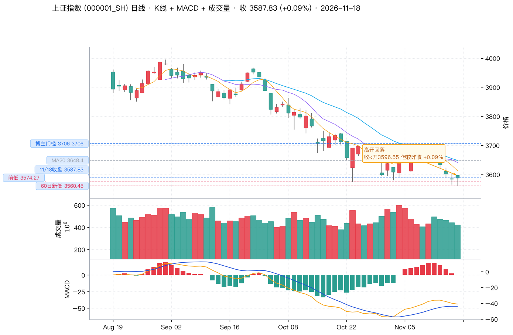
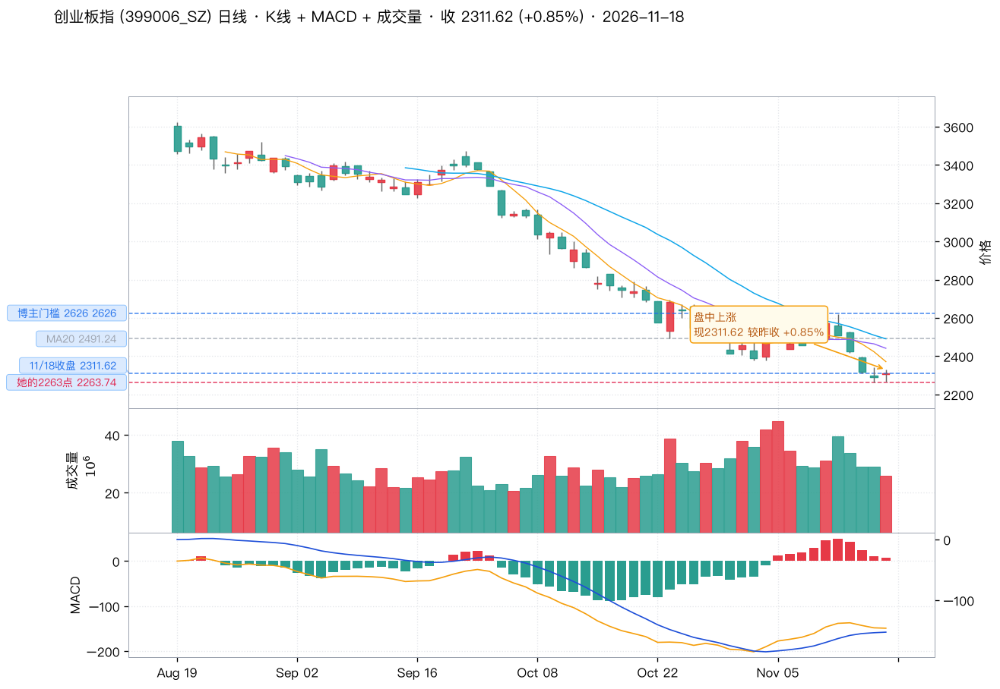
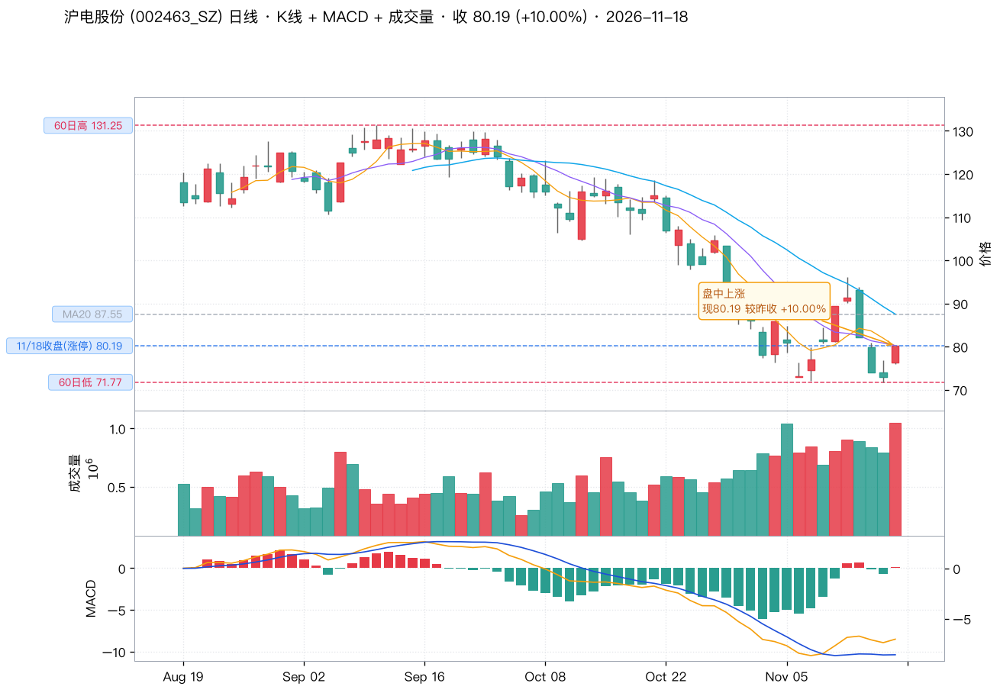
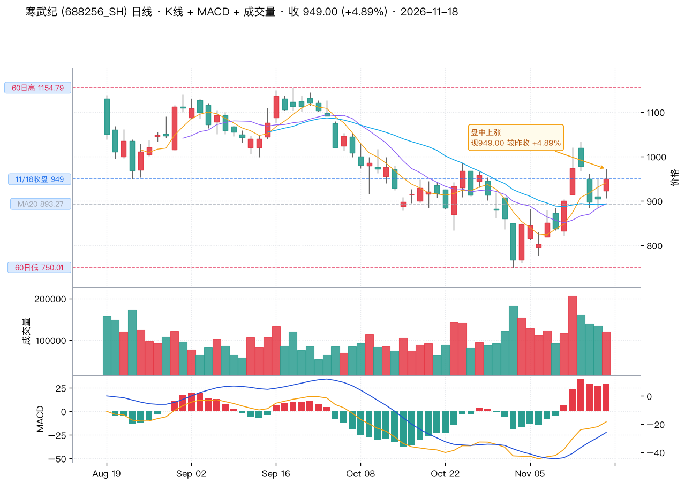
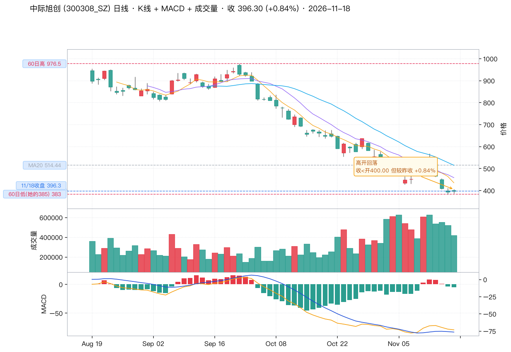

🟢🟢 09:26「昨日创业板指数试2263点，符合预期的C5低点区域了，等待构筑新波段行情即可」 —— C5 分毫不差（11/17 最低 2263.74），今日最低 2265.76 未破，二次确认。 13:22/13:53 点名算力租赁涨停潮、交换机反击、PCB龙头冲板全部兑现；21:07 英伟达断供 H200 → 国产替代（盘后）。 但地量普跌：成交额 13,714 亿缩 879 亿、跌 4133 家、沪指又创新低 3560.45。 → 底部二次确认 ≠ 反转；只在 PCB/算力/国产算力芯片做，回踩分批，总仓 ≤3 成。
| 时间 | 信号 | 原文 | 判读 / 日线实测 |
|---|---|---|---|
| 09:26 | 🟢🟢 位置确认 | 昨日创业板指数试2263点，符合预期的C5低点区域了，所以接下来等待构筑新波段行情即可 | 分毫不差：11/17 创业板最低 2263.74 = 她的 2263 点；今日最低 2265.76 未破 → C5 二次确认。但只说「等待构筑新波段」，没给标的/点位/仓位。 |
| 09:48 | ⚪ 情绪 | 这么压法，坏得很！ | 盘中确实被压：沪指开 3596.55 即当日最高，一路走低收 3587.83，最低 3560.45 再创新低。 |
| 13:22 | 🟢🟢 板块点名 | 算力租赁板块出现涨停潮！ | 兑现：19 只池 8 家涨停（美利云、中嘉博创、润建股份、华胜天成、城地香江、利通电子、恒润股份、动力源），18 涨 1 跌、均值 +6.67%、额 176 亿。 |
| 13:31 | 🟡 自我复盘 | 在ABC结构调整的第四大浪中，当C3和C5区域我喊分批布局…… | 回顾 11/13 的 C3/C5 分批布局，框架未变。属回顾非新指令，但确认 C5 是可动手区间。 |
| 13:53 | 🟢🟢 板块点名 | 目前算力租赁板块出现涨停潮，交换机板块连续反击，PCB龙头冲板！ | PCB 兑现：池 9 涨 0 跌、均值 +6.25%，沪电+深南双涨停。 交换机偏弱：池 +1.31%、0 涨停。 |
| 14:20 | ⚪ 疑 | 看看铁几？ | 钢铁池 +0.84%、铁路运营 +1.14%，均无涨停 → 未成主线。 |
| 14:28 | 🟡 定性 | 暂时还是缺乏力度！ | 当日最准一句：地量 13,714 亿、跌 4133 家、沪指新低、连板最高仅 4 板（华东重机）→ 「缺乏力度」成立。 |
| 21:04 / 21:07 | 🟢🟢 盘后催化 | 英伟达的临时CEO称，将不再向中国出货H200芯片。#英伟达停止向中国供应H200#利好国产替代！ | 催化在盘后，11/19 才交易。今天 GPU 池 +3.17%（9 涨 0 跌）不是这条催化的结果。 |
| 21:43 | ⚪ 数据 | 截至收盘，沪深两市全天成交额13890亿元，创年内地量纪录 | 方向一致：实测沪深两市 13,714 亿（全A 13,800 亿，她报 13,890 亿，差 1.3%），较昨缩 879 亿（-6.0%），确为年内地量。 |

开 3596.55（= 当日最高）/ 高 3596.55 / 低 3560.45 / 收 3587.83。 最低 3560.45 = 又是 60 日新低（前低 3565.59 再破）；3706 差 118.17 点（3.19%），MA20 3648.40 失守。

开 2306.12 / 高 2329.91 / 低 2265.76 / 收 2311.62。 最低 2265.76 > 昨日 2263.74 → 她的 2263 点二次确认不破；较日低拉回 45.86 点；2626 差 314.38 点（11.97%），MA20 2491.24 远在头顶。
| 板块 | 11/18 收盘实测 | 博主口径 / 打法 |
|---|---|---|
| ① PCB / AI 服务器硬件 首选 · 业绩最硬 |
池 9 只 9 涨 0 跌，均值 +6.25%，额 376 亿，2 家涨停 沪电股份 +10.00%、深南电路 +10.00%、景旺电子 +7.20% |
她 13:53 点名「PCB龙头冲板」，兑现。沪电 Q3 营收 +71.9%、ROE 31.5%、资产负债 52.5%。 但今日涨停、收 80.19 仍在 MA20 87.55 之下 → 首板不是反转：回踩 71.77 不破才分批。 |
| ② 算力租赁 / IDC 情绪主线 · 只做龙头 |
池 19 只 18 涨 1 跌，均值 +6.67%，额 176 亿，8 家涨停 中嘉博创 +10.10%、润建股份 +10.01%、华胜天成 +10.01% |
她两次点名，兑现，但 8 只涨停全是低价题材票（中嘉博创 3.38 元、营收 -9.0%）→ 不符合她「业绩增速明显」的公式。 只做有业绩的：紫光股份 25.11 站上 MA20 24.65、营收 +32.1%；涨停小票不碰。 |
| ③ GPU / 国产算力芯片 隔夜催化 · 11/19 才交易 |
池 9 只 9 涨 0 跌，均值 +3.17%，额 459 亿 澜起科技 +5.51%、寒武纪 +4.89%、拓荆科技 +4.56% |
21:07「英伟达停止对中国供应H200 #利好国产替代」——催化在盘后。寒武纪 Q3 营收 +106.8%、毛利率 56.5%、资产负债 32.4%，最符合她「高成长+行业向好」。 11/19 高开不追，等回踩 MA20 893.27。 |
| 代码 名称 | 收盘 | 涨跌 | 成交额 | 关键位 | 实测印证 / 动作 |
|---|---|---|---|---|---|
| 002463 沪电股份 | 80.19 | +10.00% | 81.9 亿 | MA20 87.55 · 60 日低 71.77 · 60 日高 131.25 | 她 13:53 点名的 PCB 龙头：收盘封板、放量 117%、Q3 营收 +71.9%。 但收盘仍低于 MA20 87.55、MACD 柱仅 +0.15 → 首板不是反转。今日不追，回踩 71.77 不破分批。 |
| 688256 寒武纪 | 949.00 | +4.89% | 113.3 亿 | MA20 893.27 · 60 日低 750.01 · 60 日高 1154.79 | 正对她 10:47「高成长+行业向好」：Q3 营收 +106.8%、毛利率 56.5%。收 949.00 站上 MA20 893.27、MACD 柱 +29.5（DIF 上穿 DEA）。 回踩 MA20 不破可分批，破位放弃；11/19 高开不追。 |
| 300308 中际旭创 | 396.30 | +0.84% | 164.4 亿 | MA20 514.44 · 60 日低 383.00（她的 385） | 她 10:28 自验证那笔账（1416.88→385，-72.83%）。Q3 营收 +178.1% 全池最高；今日最低 385.72 未破 60 日低 383.00，二次探底不破。 但 MA20 514.44 远在头顶（差 29.8%）、MACD 柱仍负 → 位置最低却未转势，不碰。 |

高 80.19 = 收盘价（封板）/ 低 75.89 / 收 80.19，额 81.9 亿。 涨停站上 MA5 80.12，但离 MA20 87.55 还差 7.36 元；60 日低 71.77 是支撑参考。

高 972.00 / 低 906.00 / 收 949.00，站上 MA5 940.73 与 MA20 893.27；60 日高 1154.79 在左上（距今 21.7%），60 日低 750.01 在下方。

高 404.67 / 低 385.72 / 收 396.30，额 164.4 亿（全场最大）。 距 60 日低 383.00 仅 3.47%，但 MA20 514.44 压在头顶 29.8% 处 —— 底部区域，未转势。
| 项 | 博主口径 | 实测 / 处理 |
|---|---|---|
| 09:26「C5 低点区域」 分毫不差 | 昨日创业板指数试2263点，符合预期的C5低点区域了 | 11/17 创业板最低 2263.74 = 她的 2263 点；今日最低 2265.76 未破 → 二次确认。本期最硬的核验，也是她第一次给「已到达」的点位。 |
| 13:22 / 13:53 板块点名 兑现 | 算力租赁出现涨停潮，交换机连续反击，PCB龙头冲板 | 算力池 8 家涨停、18涨1跌、均值 +6.67%；PCB 池 沪电+深南双涨停、均值 +6.25%。唯独交换机偏弱（+1.31%、0 涨停）。 |
| 21:07「利好国产替代」 盘后 · 未兑现 | #英伟达停止向中国供应H200#利好国产替代！ | 发布于 21:07 收盘后，11/19 才交易。今天 GPU 池 +3.17% 不是这条催化的结果 → 不能算她提前判断对了。 |
| 14:20「看看铁几？」 未成主线 | 看看铁几？ | 钢铁池 +0.84%、铁路运营 +1.14%，均无涨停；收盘口径判不出盘中意图，记为未成主线。 |
| 11/17 报告标的名称 更正 | 11/17 报告把「1416.88→385」的标的写成「新易盛 300308」 | 代码 300308 实为中际旭创，新易盛是 300502（11/18 收 158.21）。11/17 的价格与跌幅计算没错，错的是名称，已更正。 |
免责声明：本报告为公开微博内容整理与技术面统计，不构成投资建议； 「3 板块 + 3 个股」是博主观点 + 实测强度的归纳，股市有风险，谨慎。
报告生成：2026-11-18 收盘版 · 数据源 weibo skill + Tushare Pro 日线 ·
脚本 collect_tushare_20261118.py / collect_pools_20261118.py /
collect_mkt_20261118.py / make_wu2198_charts_20261118.py /
gen_wu2198_report_20261118.py。